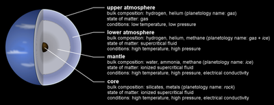
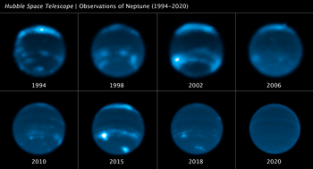

Neptune is the eighth and farthest planet from the Sun. It is the fourth-largest planet in the Solar System by diameter, the third-most-massive planet, and the densest giant planet. It is 17 times the mass of Earth, and slightly more massive than its near-twin Uranus. Neptune is denser and physically smaller than Uranus because its greater mass causes more gravitational compression of its atmosphere. Being composed primarily of gases and liquids, it has no well-defined solid surface. The planet orbits the Sun once every 164.8 years at an orbital distance of 30.1 astronomical units (4.5 billion kilometres; 2.8 billion miles). It is named after the Roman god of the sea and has the astronomical symbol ♆, representing Neptune's trident.[d]
Dark, cold, and whipped by supersonic winds, ice giant Neptune is more than 30 times as far from the Sun as Earth. Neptune is the only planet in our solar system not visible to the naked eye. In 2011 Neptune completed its first 165-year orbit since its discovery in 1846.
Neptune is so far from the Sun that high noon on the big blue planet would seem like dim twilight to us. The warm light we see here on our home planet is roughly 900 times as bright as sunlight on Neptune.
Physical characteristics
Neptune's mass of 1.0243×1026 kg[7] is intermediate between Earth and the larger gas giants: it is 17 times that of Earth but just 1/19th that of Jupiter.[f] Its gravity at 1 bar is 11.15 m/s2, 1.14 times the surface gravity of Earth,[68] and surpassed only by Jupiter.[69] Neptune's equatorial radius of 24,764 km[10] is nearly four times that of Earth. Neptune, like Uranus, is an ice giant, a subclass of giant planet, because they are smaller and have higher concentrations of volatiles than Jupiter and Saturn.[70] In the search for exoplanets, Neptune has been used as a metonym: discovered bodies of similar mass are often referred to as "Neptunes",[71] just as scientists refer to various extrasolar bodies as "Jupiters".
Internal structure
Neptune's internal structure resembles that of Uranus. Its atmosphere forms about 5 to 10% of its mass and extends perhaps 10 to 20% of the way towards the core. Pressure in the atmosphere reaches about 10 GPa, or about 100,000 times that of Earth's atmosphere. Increasing concentrations of methane, ammonia and water are found in the lower regions of the atmosphere.

The mantle is equivalent to 10 to 15 Earth masses and is rich in water, ammonia and methane.[1] As is customary in planetary science, this mixture is referred to as icy even though it is a hot, dense fluid (supercritical fluid). This fluid, which has a high electrical conductivity, is sometimes called a water–ammonia ocean.[72] The mantle may consist of a layer of ionic water in which the water molecules break down into a soup of hydrogen and oxygen ions, and deeper down superionic water in which the oxygen crystallises but the hydrogen ions float around freely within the oxygen lattice.[73] At a depth of 7,000 km, the conditions may be such that methane decomposes into diamond crystals that rain downwards like hailstones.[74][75][76] Scientists also believe that this kind of diamond rain occurs on Jupiter, Saturn, and Uranus.[77][75] Very-high-pressure experiments at the Lawrence Livermore National Laboratory suggest that the top of the mantle may be an ocean of liquid carbon with floating solid 'diamonds'
Atmosphere
At high altitudes, Neptune's atmosphere is 80% hydrogen and 19% helium.[28] A trace amount of methane is also present. Prominent absorption bands of methane exist at wavelengths above 600 nm, in the red and infrared portion of the spectrum. As with Uranus, this absorption of red light by atmospheric methane is part of what gives Neptune its blue hue,[82] although Neptune's blue differs from Uranus's milder light blue due to concentrated haze in the latter atmosphere.[83][84]
Neptune - cloud cover over three decades (1994-2023)[85]
Neptune's atmosphere is subdivided into two main regions: the lower troposphere, where temperature decreases with altitude, and the stratosphere, where temperature increases with altitude. The boundary between the two, the tropopause, lies at a pressure of 0.1 bars (10 kPa).[21] The stratosphere then gives way to the thermosphere at a pressure lower than 10−5 to 10−4 bars (1 to 10 Pa).[21] The thermosphere gradually transitions to the exosphere.

Climate
Neptune's weather is characterised by extremely dynamic storm systems, with winds reaching speeds of almost 600 m/s (2,200 km/h; 1,300 mph)—exceeding supersonic flow.[27] More typically, by tracking the motion of persistent clouds, wind speeds have been shown to vary from 20 m/s in the easterly direction to 325 m/s westward.[100] At the cloud tops, the prevailing winds range in speed from 400 m/s along the equator to 250 m/s at the poles.[86] Most of the winds on Neptune move in a direction opposite the planet's rotation.[101] The general pattern of winds showed prograde rotation at high latitudes vs. retrograde rotation at lower latitudes. The difference in flow direction is thought to be a "skin effect" and not due to any deeper atmospheric processes.[21] At 70° S latitude, a high-speed jet travels at a speed of 300 m/s.[21]
Neptune differs from Uranus in its typical level of meteorological activity. Voyager 2 observed weather phenomena on Neptune during its 1989 flyby,[102] but no comparable phenomena on Uranus during its 1986 fly-by.
The abundance of methane, ethane and acetylene at Neptune's equator is 10–100 times greater than at the poles. This is interpreted as evidence for upwelling at the equator and subsidence near the poles because photochemistry cannot account for the distribution without meridional circulation.[21]
In 2007, it was discovered that the upper troposphere of Neptune's south pole was about 10 K warmer than the rest of its atmosphere, which averages approximately 73 K (−200 °C). The temperature differential is enough to let methane, which elsewhere is frozen in the troposphere, escape into the stratosphere near the pole.[103] The relative "hot spot" is due to Neptune's axial tilt, which has exposed the south pole to the Sun for the last quarter of Neptune's year, or roughly 40 Earth years. As Neptune slowly moves towards the opposite side of the Sun, the south pole will be darkened and the north pole illuminated, causing the methane release to shift to the north pole.[104]
Because of seasonal changes, the cloud bands in the southern hemisphere of Neptune have been observed to increase in size and albedo. This trend was first seen in 1980. The long orbital period of Neptune results in seasons lasting forty years
Orbit and rotation
The average distance between Neptune and the Sun is 4.5 billion km (about 30.1 astronomical units (AU)), and it completes an orbit on average every 164.79 years, subject to a variability of around ±0.1 years. The perihelion distance is 29.81 AU; the aphelion distance is 30.33 AU.[g]
On 11 July 2011, Neptune completed its first full barycentric orbit since its discovery in 1846,[121] although it did not appear at its exact discovery position in the sky, because Earth was in a different location in its 365.26 day orbit. Because of the motion of the Sun in relation to the barycentre of the Solar System, on 11 July Neptune was also not at its exact discovery position in relation to the Sun; if the more common heliocentric coordinate system is used, the discovery longitude was reached on 12 July 2011.[11][122][123]
Neptune's orbital eccentricity is only at 0.008678. This makes it the planet in the Solar System with the second most circular orbit after Venus.[124] The orbit of Neptune is inclined 1.77° compared to that of Earth.
The axial tilt of Neptune is 28.32°,[125] which is similar to the tilts of Earth (23°) and Mars (25°). As a result, Neptune experiences similar seasonal changes to Earth. The long orbital period of Neptune means that the seasons last for forty Earth years.[105] Its sidereal rotation period (day) is roughly 16.11 hours.[11] Because its axial tilt is comparable to Earth's, the variation in the length of its day over the course of its long year is not any more extreme.
Because Neptune is not a solid body, its atmosphere undergoes differential rotation. The wide equatorial zone rotates with a period of about 18 hours, which is slower than the 16.1-hour rotation of the planet's magnetic field. By contrast, the reverse is true for the polar regions where the rotation period is 12 hours. This differential rotation is the most pronounced of any planet in the Solar System,[126] and it results in strong latitudinal wind shear